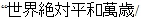

Bir depremden sonra, bir depremin içinde, bir deprem gibi yazıyoruz bütün bu kahredici şeyleri; yazıyoruz bunları ve daha nicelerini birbiriyle yüzleştirerek görmek ve göstermek istiyoruz çünkü... Çünkü bütün bunlar, barış dediğimiz o yaşama tarzı, o yol kapalı olduğu için yaşandı/ yaşanıyor... Barışın yolu bütün bu hurdahaş duygularla, güdülerle, önyargı kalıplarıyla kapatıldığı için, bütün bunlar yaşanıyor yeniden, yeniden...
Barış istiyoruz...
Irkçılık, önyargı, ötekileştirme, düşmanlaştırma, nefret ve nefret üretme makinesine dönmüş kurumlar; işkencecilik, militarizm, savaş, kışkırtıcılık; insanlığı korku ve zalimlikle yönetmek isteyen her kişi ve kurum, emeğiyle, onuruyla özgürce yaşayabilecek bir dünyanın önünü kestiği için...
Bize borçlar yüklemişler... Vatan borcu (= namus borcu) Para borcu, banka borcu, yurttaşlık (= kölelik) borcu...
Biz emeğiyle yaşayanlar borçlu doğduk ama arkamızda şerif ve adamlarına borçlu kuşaklar bırakarak ölmek istemiyoruz. Çünkü bunların hepsi şiddetin ve savaşın süslenmiş, “normalleştirilmiş” araçları ve kavramlarıdır. Bunlardan kurtulmanın, halkların, eşitlik içinde, adalete ve özgürlüğe ulaşabilecekleri koşullara erişmesinin ölçüsü, Barış’a olan mesafedir. Çünkü ancak savaşın basıp yıkmadığı, insanın ölüm ve zulüm duygularıyla kavrulmadığı; insanın, insana, insan gibi yaklaşabildiği koşullarda emekçiler, ezilenler kendi gerçek gereksinmelerini karşılayabilir, kendi asıl gayelerine, düşlerine, sanatlarına yaşam kazandırabilir.
Barış istiyoruz...
Sömürünün her türünün, her renginin, Barış’ı engelleyen cümle hakikatin göz bebeklerine bakarak Barış istiyoruz.
Irk, dil, din, cinsiyet, kültür farkları arasına sokulmuş her türlü ayrımcılık, kindarlık yalnızca ve yalnızca sömürüyle yaşayabilenlerin çıkarlarına yaramaktadır...
Para diktatörlüğüdür adı.
Barış istiyoruz.
Silaha, insan öldürmek için onca demire, çeliğe, akla, emeğe, baruta, ışığa, yola, mekâna ve bunları kullananlara, kullanacaklara harcanmış her an, her nesne bizim insanlığımızdan, emeğimizden, ekmeğimizden, doğamızdan, evrenimizden ve insanlık şenliğimizden çalınmıştır/çalınmaktadır...
Barış istiyoruz.
Halkların başka halkları tanıyarak, anlayarak kendini daha çok tanıyacağı; İnsanın insanlaşmış ilişkilerle kendisini her an yenileyebileceği; her kazanımı insan ve doğa için yeni devrimlere dönüştürebileceği bir dünyaya yürüyebilmek içindir dileğimiz, çabamız...
Barış istiyoruz.
Halklara bulaştırılan hırslar, o hırslarla başlamış savaşlarla, karanlık ve sallantılı boşluğa, başka boşluklar konur yalnızca; hiçlikler konur...
Halkların birbirini boğazlaması, öfkenin kanda sinsileşmiş, saklanmış korkuyla semizleşen gözükaralıklarıyla olur.
Konuşmak akılla olur, yollar yaratmak yürümek ve varmak için insana, akıl ve sevgi gerekir.
Barış istiyoruz.
Resmî makamlar, silah tüccarları, savaş baronları, para ve borçlandırma diktatörlüklerinin bütün kurumları özendirdikleri, besledikleri kavga kaşağısı ruhları kayıt altına alır; o ruhlardan ve bedenlerden “ordu” yapar ve her savaş için yeniden üretir.
Resmî makamların kayıt altına alarak büyütüp besleyip örgütledikleri her savaş dönüp dolaşır yeniden başlar ve adı “insanın insana karşı onarılmaz suçu” olur.
Akılla olur kendine ve evrene bakmak; hayret etmek, yaratmak, sevmek ve “yalnızca sevgi kalacak” diyebilmek...
Barış istiyoruz.
Barış istiyoruz; kazanç hırsıyla kasvete ve kahra batırılmış, parçalanmış bir dünyanın bütün bu zalim ve zalimce olan düşsüzlüğünü, ufuksuzluğunu; insanın insana olan düşüyle, sevmenin büyüklüğü, ince hüznü, inancı, vicdanı, buğulu kederiyle, esenliği, çılgın mutluluğu, duası, beklentisi, büyüsü ve her anı, anlar içinde yenileme gücü ve güveniyle değiştirmek için...
Tanıyarak, anlayıp büyüterek var olmanın ve var etmenin kirazi ışıltıları, mavi izleri, her gönüle göre renk alsın, her gönül farklı renklerden yeni renkler yapabilsin diye...
***
Barış istiyoruz...
Toplumların birbirini tanıması ve anlaması, gezegenimizdeki “kültürlerin zengin çeşitliliğini, ifade biçimlerini ve insan olmanın yollarını kabul etmek, bunlara saygı göstermek bunların değerini bilmektir.” Adalet duygusunu öne çıkaran her toplum “bilgiyle, açıklıkla, iletişimle, düşünce, vicdan ve inanç özgürlüğüyle beslenir.”
Toplumların birbirine karşı açık ve içten olması, “yalnızca ahlaki bir görev değil, aynı zamanda siyasi ve hukuki bir gerekliliktir. Barışı olanaklı kılar, barış kültürünün savaş kültürüyle yer değiştirmesine katkıda bulunur.”
İstediğimiz şey, “kabullenme, lütfetme veya göz yumma değildir. Hepsinin üzerinde, başkalarının evrensel insan haklarının ve temel özgürlüklerinin tanınmasıyla teşvik edilen etken bir tavırdır.”
“Toplumsal adaletsizliğin hoş görülmesi veya inançların terk edilmesi veya zayıflatılması anlamına gelebilecek” etkinliklerin tümünü ortaklaşa reddedebilme gücünü geliştirmek; “kişinin kendi inançlarına bağlı olmakta özgür olması ve başkalarının da kendilerine ait inançlara bağlı olduğunu kabul etmesi demektir.”
Çünkü barışı anlayabilmek ve onun kültürünü oluşturabilmek için “görünüşü, durumu, konuşması, davranışı ve değerleri doğal olarak farklı olan insanların barış içinde ve oldukları gibi yaşama hakkına sahip oldukları gerçeğini kabul etmeyi” öğrenmek zorunluluktur.
(Bu bölümde, UNESCO’nun “Hoşgörü İlkeleri Bildirgesi” başlıklı metninden yararlanılmıştır.)
BİR SONRAKİ SAVAŞ
Kollarım yok benim
omuzlarıma raptedilmiş
kanat gibi ellerim
belki bir kuş olacaktım
ama ben uçmam
belki de bir insan
ama ben öldürmem
hem sarılmalı değilim hiçbirinize
siz, öldürenler
siz, taş fırlatan eller
ta ezelden beri
sapanınız değişti sadece.
Bir sonraki savaş
–öyle söyledi Einstein–
ok ve yay ile savaşılacakmış yeniden
ve bir sonraki buzdolabı
yağmur suyu dolu
topraktan bir testi olacakmış.
Ama o gün gelene kadar
evrensel Toplama Kampı diye
kalır dünyadaki itaatsizlere
belki gökte ay
Hilde Domin
***
İslamiyetten önce de, Hıristiyanlıktan önce de vardı o sözcük; öyle görünüyor ki savaşlar sürdükçe de var olacaktır:
Eski Yunan’da “Martys” demişler.
“Şahit!”
İngiliz dilini konuşanlar “Martyr,” diyor;
İspanyol dünyası “Martir;”
Almanlar “Märtyrer;”
Araplar, Kürtler ve Türkler “Şehit;”
Latinler “Martyris;”
Ruslar “Muçinık.”
Müslümanlara karşı giriştikleri savaşlarda ölülerini aynı sözcükle gömmeye başlamıştır Hindistan’ın Sihleri; inanın ki hiçbir kutsal kitaba bağlı değiller. Gelin görün ki bugün de kullanıyor Araplardan aldığı o sözcüğü o halk; aynı nedenlerle, aynı anlam içeriğiyle.
“Şehit.”
Savaşa daha çok adam götürmeye ihtiyacı olan krallar, savaşacak taraftara ihtiyacı olanlar bu sözcüğü büyütüp anlamlarından koparmıştır. Her kral çünkü, peygamberdir gerçekte...
Paranın her hali, her dirhemi, her kuruşu peygamberden büyüktür para diktatörlüğünde... İster “şahit” olalım, ister “şehit!”
Bu kutsal sözcükle toprağa veriyor çocuklarını hem Türkler hem de Kürtler...
Hiçbir zaman kutsal olmamış, hiçbir zerresinde kutsallık barındırmayan bütün savaşların, bütün ölülerinin üstüne bu sözcük örtülüyor.
Ölümü kutsamanın bir yolu olarak var edilmiş sözcükler, düşünüşler, davranışlar gerçekte sarmaz hiçbir yarayı...
Şehitliği yücelterek çocuklarımızı birbirinden ayıran bir çıkarlar sisteminde, şimdi bize çocuklarımızın ölülerini bile ayrı acılarla gömmemizi söylüyorlar. Bizi, yaralarımızı unutmamızın bir yolu olarak birbirimizden bir de böyle ayıranların iğvasıyla gömüyoruz çocuklarımızı...
Barış istiyoruz.
Hayli zamandır toprak, mülkiyet, nakit, çıkar sözcüklerini örtmek için kullanılan bu sözcük artık kimseyi öldürmemeli.
“Şuheda” fışkırmasın topraktan.
Şuh eda yaşasın insan yeryüzünde...
Barış istiyoruz.
***
“İnsana kıymayacaksın/Öldürmeyeceksin” diyen dinlerin, yaşama hakkının ve sevincinin dokunulmazlığını ölümün soğukluğuyla;
“Çalmayacaksın” diyen dinlerin insana verdiği güveni, yağmacılığın ve her türlü yasal hırsızlığın ve meta fetişizminin tedirgin ediciliğiyle;
“Komşuna yalanla yaklaşmayacaksın, yalanlar söyleyerek onu kırmayacaksın” diyen dinlerin, insana vermek istediği doğruluk duygusunu yalan ve nefret yaymak bakımından aklınıza gelen her yolla, iftiranın, hasislikle küçültmenin dünyasına çevirerek sürdürüyorlar savaşlarını...
Barışı biz yapacağız.
Barış istiyoruz!
Bu pis işlerde bizi ortak ederek, kirli işlerinde bizi kullanarak sürdürüyor, büyütüyorlar savaşlarını.
Hep bizi öldürerek...
Hep bizi öldürerek...
Hep bizi öldürerek...
Bu savaşları bize sudan ve ekmekten daha çok, daha önce satarak sürdürüyorlar.
Barışı biz yaratabiliriz; biz kendimiz için.
Barış istiyoruz.
***
İnsanı kurban ederek kendini güçlü hissedenlerin; insanların yanık ve kanlı cesetlerine güvenerek “güçlülükten” ve “gelecek mutluluktan” söz açanların temsil ettikleri değerlere, çıkarlara iyi bakmalıyız.
“Halkların mutluluğunun, aklının ve bireylerin erdeminin kurban edildiği bir mezbaha tezgâhından başka bir şeye benzemeyen” binlerce yıla yayılmış bu tarihe de, bu talihe de yeter!
Barış isitiyoruz!
***
Romantik bir özlem, imgenin dehlizlerinden salınan bir soyutluk değil istediğimiz; bir zorunluluk...
Zorunluluklar içinde en büyük, vazgeçilmez, susulamaz, ertelenemez bir zorunluluktur istediğimiz.
Barış istiyoruz.
***
Atomun çekirdeğini kırmış bir insanlık, her türlü fanatizmin, fetişizmin, aptallığın, bizi insanlığımızdan utandıran insan kırıcılığının da hakkından gelebilir. Toplumların kendi öz gücünden, insancıllığından, eşitlik duygusu ve adalet sevincinden başka şeye ve kimseye gereksinimi yoktur bunun için.
Barış istiyoruz.
***
Bir tek insan olsa dünyada, hangi anlam olurdu; hangi düş, hangi zihin olurdu?
Bir tek ulus olsaydı dünyada gelişir miydi dili, istenci, hayali, keşif gücü, bilimi, zorluğu, yüreği, yürüyüşü?
Biz dili ve kültürü inkâr edilmiş, sözcükleri, türküleri, duası ve inancı işkence görmüş, hapsedilmiş halklarız. Özgürleşmek, birbirimizi büyütmek ve birikmek için varız... Bütün insanlığız.
Barış istiyoruz.
Olmasaydı doğa; rüzgârla gezinen polenler, bakteriler, mikroplar, zerreler zerresi; arısı, sineği, solucanı, akrebi, balığı, ormanı, denizi, ırmağı, mağarası... Olur muydu yaşam ve zihnimiz?
Doğayı yalnızca para ve çıkar olarak gören, bu çıkarcılığı bütün insanlığa farklı vaatlerle, korkuyla sunan, satılır ve satın alınır derekesine indirgeyen diktatörlüklerin karşısında durmak, bütün bu öldürücülüğü durdurmaya çalışmak insanı insan yapacaktır...
Barış istiyoruz.
Kimse tek başına var olmadı. Biz sadece kendimize ait değiliz. Hiç kimse bedeninin sonsuzca yaşayacağını söyleyemez, ama bir insanlık varsa, doğan her çocuk bizim zihnimizdir...
İnsan öteki insanın, bir toplum ötekinin belleği, zihni, sanatı ve yaşamsal her anında vardır; var olmalıdır ve bu var oluşun karakterini vahşileştiren, sekteye uğratmaya yeltenen her türlü savaş ve sansür, inkâr ve imha toplumların ortak etkinliğiyle ortadan kaldırılmalıdır.
Barış istiyoruz.
***
Nefretleri yaratan önyargıdır. Önyargıyı yaratan halkların farklılıklarından hükümdarlık ve çıkar umanlardır.
Bu çıkarların ve çatıştırmaların her türlü görünümü: Milliyetçilik, ulusçuluk, bölünmez bütünlükler, kutsal görevler, kutsal borçlar vs... vs... Tümü para diktatörlüğünün çıkarlarına denk gelir; halklar çocuklarını işte bu dünyaya kurban verir...
Önyargı, faşistliğin, hunharlığın öbür adıdır.
Barış istiyoruz.
***
Toplumlara acı çektirmemiş bir savaş hatırlayan var mı?
Bir toplum, kendisine ve başkalarına acı verecek bir şey için neden acı çeksin ki?
“Mutlu olmak varken bu dünyada!”
Barış istiyoruz.
***
Biz kıtlıklar içinde yaşamaya mecbur bırakılmışlar, savaş zamanı, verip varımızı yoğumuzu, satın alıyoruz savaşı; biz, satın alıyoruz damarımızda taşıdığımız kanı her gün yeniden; biz yaşamak için değil, savaşmak ve “üstün” olmak için didiniyoruz... Didiniyoruz onlar için, onlar adına, onlardan fazla...
Bunların kötü birer anıya döneceği bir zamanın eşiğindeyiz.
Barış istiyoruz.
***
Hitler faşizminin 1939 yılında Polonya’yı işgal ederek İkinci Dünya Savaşı’nı başlattığı tarih olan 1 Eylül “Dünya Barış Günü” olarak kutlanıyordu... Sovyetler Birliği içine düştüğü kapitalist kuşatmayla, yeniden ürettiği gericiliğiyle, emperyalistçe hunharlıklarıyla çöktü. Varşova Paktı dağıldı. Ve insanlık, Dünya Barış Günü’nü unuttu.
Sonra, Birleşmiş Milletler yeni bir karar aldı; BM’nin genel kurulunun açılış günü olan 21 Eylül “Uluslararası Barış Günü” ilan edildi.
Şimdi, savaşların getirdiği yıkımı anımsatmak için, savaşların bütün kurbanlarının anısına Japonya tarafından yaptırılmış ve BM genel merkezine asılmış “Barış Çanı,” her 21 Eylül’de çalıyor.
Dünyanın tüm ülkelerinden çocukların bağışladıkları bozuk paralardan üretilmiş bu çanın üzerinde şunlar yazıyor:
Çok Yaşa Mutlak Barış.”
1 ya da 21 Eylül. Dünya bu iki günden birini seçerek “Barış” diyor.
Dünyaca, senede bir gün “Barış” dediğimizi sanıyoruz.
Savaş diktatörleri de herkesle aynı anda, kadeh kaldırıyor bugün:
“Yaşasın Barış!”
“Barış” bir söylence, şekli şemali belirsiz bir efsanedir bu dünyada. Yılda bir gün söylenen bir sözdür. Bir hiçten bir gıdım fazladır belki.
Savaş her gündür, her andır. Somut, elle tutulur, gözle görülür, kanın, ekmeğin, sevginin, sevişmenin, çocukluğun, okulun, evlerin, sokakların içindedir. Daha da beter olan, daha da yanıltıcı olanı, Barış savaşın karşıtı bir sözcük olarak vardır. Çünkü, kapitalist dünyada, savaş, üretimin, pazarın, politikanın özü olarak vardır.
Biz dünyaya tersini öneriyoruz.
Yılın her gününü Barış içinde geçirelim ve yılın bir gününü savaşı konuşmaya ayıralım.
Bu ister 1, ister 21 Eylül olsun.
Barış istiyoruz.
***
“Liderler barıştan söz ettiğinde
Sıradan halk bilir
Savaşın yaklaştığını.
Liderler savaşı lanetlediğinde ise
Seferberlik emri yazılmış demektir.”
böyle diyor Bertolt Brecht.
“Si vis pacem para bellum/Barış istiyorsan savaşa hazır ol!” Bu sözü neden sevelim?
Biz adaletli, insanlıklı, sevinçli bir dünyayı neden seçmeyelim?
“Si vis pacem, para justitiam!/Barış istiyorsan adalete, anlayışa, sevgiye hazır ol”
Biz satın alacağımız bir barış istemiyoruz.
Yapacağımız.
Yaşayacağımız.
Seveceğimiz.
Bir barış istiyoruz.
***
Çağımız yeteneksizlerin, işgüzarların, fırsatçıların, bencillerin yönetici olarak, bütün çözümlerin ilk sırasına savaşı koydukları bir çağdır.
Paylaşımın adaletsiz olduğu bir dünyada, bir taraf aşırı tüketimden hastalanırken, dünyanın başka tarafları açlıktan ve susuzluktan ölmektedir. Ve petrol ya da su, temiz hava ya da verimli toprak, pazar ya da ucuz iş gücü aklınıza gelen hemen her şey için savaşlar sürmektedir. Kapitalistler insanlığa “sürdürülebilir kalkınma” başlığı altında sayısız yalan söylüyor, fakat gezegenimiz “Bütün bu yalanlara karnım tok” diyor. Kapitalizmin bunca pisliği, tüketim toplumlarının hoyratlığı karşısında dayanma gücünü yitirmek üzere olduğunu haykırıyor.
Doğa olmazsa insan olamaz.
Barış istiyoruz.
***
“Doğada yaşamın belirleyicisi vahşilik ve mücadeledir” diyoruz. “Hareketin kaynağı mücadeledir.” Doğru. Ama aynı yaşam tarzının insanlar arasında da geçerli olması gerektiğini söyleyebilmek için kimin, nasıl bir dayanağı vardır?
Doğada insan dışındaki canlıların yaşamını belirleyen, bir var olma çatışması ve buluşmasıdır. Kendi içinde bir dengesi vardır. Yiyecek bulmak, sevişmek ve üremek, barınmak ister hayvanlar. Ama hiçbir tür ötekine soykırım uygulamaz, başka hemcinslerine satmak için bir şey biriktirmez.
Ama insanlar arasındaki çatışmanın asıl farkı budur. Bugün dünyamızı belirleyen savaşların özüne bakarsanız, aptalca milliyetçilik, bağnazlık, üstü çağdaşlık soslarıyla örtülmüş “özgürlük” ihraç etme yalanları, güçlü olmak, emredebilmek ya da hükmedebilmek, gibi bahanelere dayanmaktadır... Bunların tümünün, tümünün arkasında mülkiyet biriktirmek ve artı değer sömürüsü vardır.
Barış istiyoruz.
Vicdanın ve aklın ırkçılığı, kindarlığı, vurgunculuğu ve benzeri başka vahşilikleri gerilettiği, hak ettiği karanlığa hapsettiği bir dünya istiyoruz.
***
Biz, bugün ülkesinde kitapları toplatılan, gazeteleri kapatılan, gazetecileri öldürülen, hapsedilen, yazarları ırkçı yasalarla yargılanan, hapsedilen ve tehdit edilen bir ülkede UNESCO’nun aşağıdaki kararlarının uygulanmasının Barış için olmazsa olmaz bir İLK ADIM olduğunu düşünüyoruz:
Birleşmiş Milletler, Kitle İletişim Araçlarının Barışın Ve Uluslararası Anlayışın Güçlendirilmesine, İnsan Haklarının Geliştirilmesine Ve Irkçılık, Apartheid Ve Savaş Kışkırtıcılığı İle Mücadele Edilmesine Katkıda Bulunmasıyla İlgili Temel İlkeler Bildirgesi
28 Kasım 1978 Genel Konferansı:
Madde 1
Barışın ve uluslararası anlayışın güçlendirilmesi, insan haklarının geliştirilmesi ve ırkçılık, apartheid (Afrika dillerinde ayrımcılık anlamına gelir. Güney Afrika’da 1948 ile 1994 yılları arasında beyaz ırkın siyahilere uyguladığı ayrımcı politikanın simgesi olarak uluslararası sözleşmelere girmiştir) ve savaş kışkırtıcılığı ile mücadele edilmesi, serbest haber akışını ve haberlerin daha geniş ve daha dengeli olarak dağılmasının sağlanmasını gerektirir. Bunun gerçekleştirilmesine kitle iletişim araçları öncülük eder. Ele alınan konunun değişik yönleri yansıtıldığı ölçüde, haberlerin daha etkili bir katkısı olur.
Madde 2
1. İnsan haklarının ve temel özgürlüklerin bütünleyici bir parçası olarak kabul edilen fikir, ifade ve haber alma özgürlüğünün kullanılması, barışın ve uluslararası anlayışın güçlendirilmesinde hayati önemi olan bir faktördür.
2. Halk tarafından haberlere ulaşılması, haber kaynaklarının ve araçlarının çeşitliliğinin sağlanması suretiyle güvence altına alınır; böylece her bireyin, olayların gerçekliğini denetlemesine ve olayları objektif bir biçimde değerlendirmesine imkân sağlanır. Bu amaçla, gazeteciler haber verme özgürlüğüne ve habere ulaşmak için mümkün olduğu kadar her türlü imkâna sahip olmalıdır. Bunun gibi, kitle iletişim araçlarının halkın ve bireylerin ilgi alanlarına yanıt verebilmesi, ve böylece haberlerin işlenmesine halkın katılmasının sağlanması da önemlidir.
3. Kitle iletişim araçları bütün dünyada barış ve uluslararası anlayışın güçlendirilmesi, insan haklarının geliştirilmesi ve ırkçılık, apartheid ve savaş kışkırtıcılığı ile mücadele edilmesi amacıyla, görevleri gereği, özellikle sömürgecilikle, yeni sömürgecilikle, yabancı işgaliyle, her türlü ırksal ayrımcılıkla ve baskıyla mücadele eden, ve kendi ülkeleri içinde seslerini duyurma imkânı bulamayan baskı altındaki insanların seslerini duyurarak, insan haklarının geliştirilmesine katkıda bulunur.
4. Kitle iletişim araçlarının bu Bildiri’deki prensipleri geliştirme durumunda olabilmeleri için, gazetecilere ve kitle iletişim araçlarının diğer mensuplarına hem kendi ülkelerinde hem de yabancı ülkelerde mesleklerini yapabilmeleri için gerekli şartları güvence altına alan koruma sağlanır.
Madde 3
1. Barışın ve uluslararası anlayışın güçlendirilmesinde ve ırkçılık, apartheid ve savaş kışkırtıcılığı ile mücadele edilmesinde kitle iletişim araçlarının büyük bir önemi vardır.
2. Kitle iletişim araçları, önyargıların ve cahilliğin tırmandırdığı savaşçılığı, ırkçılık, apartheid ve diğer insan hakları ihlalleriyle mücadele ederken, bütün halkların amaçları, düşünceleri, kültürleri ve ihtiyaçları hakkında haberler yayarak, cahilliğin ve halklar arasındaki yanlış anlayışların tasfiye edilmesine, bir ülkenin vatandaşlarının ihtiyaçları ve arzuları konusunda diğer ülkenin vatandaşlarının duyarlı hale gelmesine, ırk, cinsiyet, dil, din veya milliyet ayrımı gözetmeksizin bütün ulusların, bütün halkların ve bütün bireylerin haklarına ve onurlarına saygının sağlanmasına, yoksulluk, açlık ve hastalık gibi insanlığı yıkıcı büyük belalar gibi konulara dikkat çekmeye, bu suretle devletlerin uluslararası gerilimin düşürmelerine ve uluslararası uyuşmazlıkların barışçı ve hakkaniyetle çözmelerini sağlayabilecek politikalar oluşturmalarına katkıda bulunur.
Madde 4
Kitle iletişim araçları, insan haklarının, bütün insanlar ve halklar arasında eşitlik ile ekonomik ve toplumsal kalkınmanın sağlanması için gençlerin barış, adalet, özgürlük, karşılıklı saygı ve anlayış ruhu içinde eğitilmeleri konusunda önemli bir role sahiptir. Aynı şekilde, kitle iletişim araçları genç kuşakların bakış açılarının ve düşüncelerinin bilinmesinde önemli bir rol oynar.
Madde 5
Fikir, ifade ve haber alma özgürlüğüne saygı gösterilmesini ve haberlerin bütün görüşleri yansıtmasını sağlamak için, hakkında haber yayınlanmış ve yayılmış olduğunu düşünen ve görüşleri sunulacak olan kimselerin, barışı ve uluslararası anlayışı güçlendirme, insan haklarını geliştirme, ırkçılık, apartheid ve savaş kışkırtıcılığı propagandasına karşı mücadele etme çabaları ciddi surette önem taşır.
Madde 6
Adil ve devamlı bir barışın oluşması ve gelişmekte olan ülkelerin ekonomik ve siyasal bağımsızlıkları bakımından büyük önem taşıyan haberlerin akışında yeni bir güçler dengesi ile karşılıklı alışverişin kurulması için, gelişmekte olan ülkelere ve bu ülkelerden diğerlerine ve bu ülkeler arasında haber akışındaki eşitsizliği gidermek gereklidir. Bu amacın gerçekleştirilmesinde esaslı faktör, gelişmekte olan ülkelerdeki kitle iletişim araçlarının, kendilerini güçlendiren ve genişleten kaynaklara, hem kendi aralarında hem de gelişmiş ülkelerdeki kitle iletişim araçlarıyla iş birliği yapma imkânlarına sahip olmalarıdır.
Madde 7
Kitle iletişim araçları, Birleşmiş Milletler’in çeşitli organları tarafından kabul edilmiş kararlara temel oluşturan ve evrenselliği tescil edilmiş olan amaçlar ve prensipler ile ilgili bütün bilgilerin çok daha geniş bir alana yayılmasını sağlayarak, barışın ve uluslararası anlayışın güçlendirilmesine ve daha adil ve eşitlikçi bir uluslararası düzenin kurulmasına etkili bir biçimde katkıda bulunur.
Madde 8
Mesleki teşkilatlar, gazetecilerin ve kitle iletişim araçlarının diğer görevlilerinin mesleki eğitimlerine katılanlar ve bu kişilerin görevlerini sorumlu bir biçimde yerine getirmelerinde kendilerine yardımcı olanlar, mesleki ahlak kurallarını düzenlerken ve bu kuralların uygulanmasını sağlarken, bu Bildiri’deki prensiplere özel bir önem verirler.
Madde 9
Bu Bildiri’nin ruhuna uygun olarak, haberlerin serbestçe akışının sağlanması ve daha geniş ve dengeli bir biçimde dağılması için gerekli şartlar ile, gazetecilerin ve diğer kitle iletişim araçlarında çalışan görevlilerin işlerini yaparken korunmaları için şartların yaratılmasına katkıda bulunmak, uluslararası topluma düşen bir görevdir. UNESCO, bu konuda katkıda bulunulması için uygun bir mekândır.
Madde 10
1. Haber alma özgürlüğünün güvence altına alınmasını ve konuyla ilgili uluslararası belgelerin ve anlaşmaların uygulanmasını düzenleyen anayasal hükümler çerçevesinde, dünyanın her yerinde, bu Bildiri’nin amaçlarını gerçekleştirmek için haberlerin yayılmasına mesleki açıdan katılan teşkilatlar ve kişiler için gerekli şartların yaratılması ve sürdürülmesi zorunludur.
2. Haberlerin serbestçe akışının sağlanması ve haberlerin daha geniş ve daha dengeli dağılımın yapılmasını teşvik etmek önemlidir.
3. Bu amacın gerçekleşmesi için, devletler tarafından gelişmekte olan ülkelerdeki kitle iletişim araçlarının güç kazanmalarını ve güçlerini artırmalarını sağlayacak şartlara ve kaynaklara sahip olmalarının kolaylaştırılması, ve gelişmekte olan ülkelerdeki kitle iletişim araçlarının hem kendi aralarında hem de gelişmiş ülkelerdekilerle iş birliği yapmalarını desteklemeleri gereklidir.
4. Bunun gibi hakların eşitliğine, karşılıklı menfaate ve insanlığın ortak mirasını meydana getiren kültür çeşitliliğine saygı esasına dayanarak, bütün devletler arasında ve özellikle değişik ekonomik ve sosyal sistemleri olan devletler arasında haberlerin ikili ve çok taraflı alışverişini teşvik etmek ve geliştirmek temel teşkil eder.
Madde 11
Bu bildirinin bütünüyle etkili olabilmesi için, üye devletlerin yasal ve idari düzenlemeleri ile diğer yükümlülükleri çerçevesinde, kitle iletişim araçlarının İnsan Hakları Evrensel Bildiri’nin hükümlerine ve Birleşmiş Milletler Genel Kurulu tarafından 1966 yılında kabul edilen Kişisel ve Siyasal Haklar Uluslararası Sözleşmesi’nin buna karşılık gelen hükümlerine uygun olarak çalışabilmeleri için, uygun şartların varlığının güvence altına alınması gereklidir.
***
Barış istiyoruz.
Barış, haklı tarafın, inkâr edilmişlerin, soykırıma uğramışların, haksızın yasalarını, dayatmalarını kabul ettiği bir anlaşma değildir.
Yeryüzünün bir parçasında gerçekleşen bir Barış, yeryüzünün her köşesine adalet ve sevme kültürünü, anlama ve birlikte var olma düşüncesini taşıyabilmeli.
Bu nedenle önce silahlar susmalı. Çünkü kan dökmek insani bir marifet değildir; büyük ve insani olan savaşın akıttığı gözyaşını durdurabilmektir.
***
Yeryüzünün bir köşesinde haklı, helal, adaletli bir özlem, bir hayal varsa, biz bunun mutlaka gerçekleşeceğini biliyoruz.
Kendi evimizden başlamalıyız.
Barış istiyoruz.